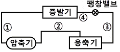
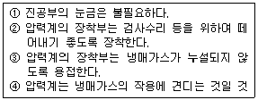
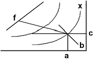

공조냉동기계기능사 (2006-01-22 기출문제)
1과목: 공조냉동안전관리
1. 정전 작업시의 안전관리 사항 중 적합하지 못한 것은?
- 무전압 상태의 유지
- 잔류전하의 방전
- 단락접지
- 과열, 습기, 부식의 방지
(정답률: 62%)

2. 고압가스 일반 제조시 저장탱크를 지하에 묻을 경우 기준에 맞지 않는 것은?
- 저장탱크의 주위에 마른 모래를 채워둘 것
- 지하에 묻는 저장탱크의 외면에는 부식방지 코팅을 할 것
- 저장탱크를 묻는 곳의 주위에는 지상에 경계를 표시할 것
- 저장탱크의 정상부와 지면과의 거리는 1m 이상으로 할 것
(정답률: 68%)
3. 보일러 수위가 낮으면 어떤 현상이 일어나는가?
- 습증기 발생의 원인이 된다.
- 수면계에 물때가 붙는다.
- 보일러가 과열되기 쉽다.
- 습증기압이 높아 누설된다.
(정답률: 83%)
4. 안전사고 방지의 기본원리 5단계를 바르게 표현한 것은?
- 사실의 발견→분석→시정방법의 선정→안전조직→시정책의 적용
- 안전조직→사실의 발견→분석→시정방법의 선정→시정책의 적용
- 사실의 발견→시정방법의 선정→분석→시정책의 적용→안전조직
- 안전조직→사실의 발견→시정방법의 선정→시정책의 적용→분석
(정답률: 50%)
5. 아크용접 작업 중 아크 빛으로 인하여 혈안이 되고, 눈이 붓는 수가 있으며 눈병이 생긴다. 이 때 우선 취해야 할 일은?
- 안약을 넣고, 계속 작업해도 좋다.
- 먼 산을 보고, 눈의 피로를 푼다.
- 냉찜질을 하고, 안정을 취한다.
- 묽은 염수를 넣고, 안정을 취한 다음 찬물로 씻는다.
(정답률: 58%)
6. 다음 수공구에 관한 안전사항으로 옳지 않은 것은?
- 주위 환경에 주의해서 작업을 시작한다.
- 수공구 상자내의 수공구는 잘 정리 정돈하여 놓는다.
- 수공구는 항상 작업에 맞도록 점검과 보수를 한다.
- 수공구는 기계나 재료 등의 위에 올려놓고 사용한다.
(정답률: 93%)
7. 보일러를 단기간 정지했을 경우에 사용되는 보존법은?
- 건조 보존법
- 만수 보존법
- 밀폐 보존법
- 석회 보존법
(정답률: 55%)
8. 다음 중 냉동기 윤활유 구비조건으로 적합하지 않은 것은?
- 고 점도액일 것
- 전기적 절연내력이 클 것
- 냉매가스와 용해가 적을 것
- 인화점이 높을 것
(정답률: 64%)
9. 냉동제조의 시설 및 기술기준으로 적합하지 못한 것은?
- 냉동제조설비 중 특정설비는 검사에 합격한 것일 것
- 냉동제조시설 중 냉매설비에는 자동제어 장치를 설치할 것
- 제조설비는 진동, 충격, 부식 등으로 냉매가스가 누설되지 아니할 것
- 압축기 최종 단에 설치한 안정장치는 2년에 1회 이상 작동시험을 할 것
(정답률: 85%)
10. 안전모의 취급 안전관리 사항 중 적합하지 않는 것은?
- 산이나 알카리를 취급하는 곳에서는 펠트나 파이버모자를 사용해야 한다.
- 화기를 취급하는 곳에서는 몸체와 차양이 셀룰로이드로 된 것을 사용하여서는 안 된다.
- 월 1회 정도로 세척한다.
- 모체와 착장제의 땀방지대의 간격은 5㎜ 이하로 한다.
(정답률: 47%)
11. 산소용기를 취급할 때의 주의 사항 중 틀린 것은?
- 항상 40℃ 이하로 유지할 것
- 밸브의 개폐는 급격히 할 것
- 화기로부터 멀리할 것
- 밸브에는 그리이스나 기름 등을 묻히지 말 것
(정답률: 87%)
12. 다음 중 휘발성 유류의 취급시 지켜야 할 안전사항으로 옳지 않은 것은?
- 실내의 공기가 외부와 차단 되도록 한다.
- 수시로 인화물질의 누설여부를 점검한다.
- 소화기를 규정에 맞게 준비하고, 평상시에 조작방법을 익혀 둔다.
- 정전기가 발생하는 화학섬유 작업복의 착용을 금한다.
(정답률: 85%)
13. 냉매누설 검지법 중 암모니아의 누설검지 방법이 아닌 것은?
- 취기
- 붉은 리트머스시험지
- 페놀프타렌지
- 헤라이드 토치
(정답률: 62%)
14. 다음 중 감전시 조치사항 설명으로 잘못된 것은?
- 병원에 연락한다.
- 감전된 사람의 발을 잡아 도전체에서 떼어낸다.
- 부근에 스위치가 있으면 즉시 끈다.
- 전원의 식별이 어려울 때는 즉시 전기부서에 연락한다.
(정답률: 79%)
15. 수공구 작업에서 재해를 가장 많이 입는 신체 부위는?
- 손
- 머리
- 눈
- 다리
(정답률: 90%)
2과목: 냉동기계
16. 고체 이산화탄소가 기화할 때 필요한 열은?
- 융해열
- 응고열
- 승화열
- 증발열
(정답률: 75%)
17. 냉동장치의 고압측에 안전장치로 사용되는 것 중 부적당 한 것은?
- 스프링식 안전밸브
- 플로우트 스위치
- 고압차단 스위치
- 가용전
(정답률: 51%)
18. 다음 중 수분의 냉매에 대한 용해도가 가장 큰 것은?
- R-22
- 암모니아
- 탄산가스
- 아황산가스
(정답률: 82%)
19. 냉동사이클에서 응축온도를 일정하게 하고, 압축기 흡입가스의 상태를 건포화증기로 할 때 증발온도를 상승시키면 어떤 결과가 나타나는가?
- 압축비 증가
- 냉동효과 증가
- 성적계수 감소
- 압축일량 증가
(정답률: 51%)
20. 압축기 구동 전동기로 흐르는 전류가 5A이고 전압이 100V일 때 전동기의 소비전력은 몇 W인가?
- 4
- 20
- 250
- 500
(정답률: 52%)
21. 강관의 피복재료로 적당하지 않은 것은?
- 규조토
- 석면
- 기포성 수지
- 광명단
(정답률: 53%)
22. 암모니아 냉동기에서 오일 분리기의 설치로 적당한 것은?
- 압축기와 증발기 사이
- 압축기와 응축기 사이
- 응축기와 수액기 사이
- 응축기와 팽창변 사이
(정답률: 70%)
23. 만액식 증발기에서 전열을 좋게 하는 조건 중 틀린 것은?
- 냉각관이 냉매에 잠겨있거나 접촉해 있을 것
- 관 간격이 넓을 것
- 관면이 거칠거나 핀이 부착되어 있을 것
- 평균온도차가 클 것
(정답률: 58%)
24. 사용압력이 10kg/cm2의 비교적 낮은 증기, 물, 기름, 가스 및 공기배관용에 사용하며, 아크 용접에 의해 제조된 관은?
- 배관용 아크 용접 탄소강관
- 고압배관용 탄소강관
- 아아크 스테인레스 강관
- 배관용 합금강관
(정답률: 69%)
25. 다음의 냉동장치에 대하여 맞는 것은?
- R-12의 경우는 드라이어를 사용하나 R-22의 경우는 필요하지 않다.
- 암모니아의 경우에는 유분리기를 쓰지 않는다.
- R-12의 경우는 압축기의 물자켓이 반드시 필요하다.
- R-22의 자동 팽창변은 암모니아에 사용될 수 없다.
(정답률: 37%)
26. 셸 튜브 응축기는?
- 공랭식 응축기이다.
- 수냉식 응축기이다.
- 역류식 응축기이다.
- 강제 대류식 응축기이다.
(정답률: 56%)
27. 다음은 동관에 관한 설명이다. 틀린 것은?
- 전기 및 열전도율이 좋다.
- 가볍고 가공이 용이하며 동파되지 않는다.
- 산성에는 내식성이 강하고 알카리성에는 심하게 침식된다.
- 전연성이 풍부하고 마찰저항이 적다.
(정답률: 78%)
28. 다음의 사항 중에서 잘못된 것은?
- 1BTU란 물 1Lb를 1℉ 높이는데 필요한 열량이다.
- 1kcal란 물 1kg를 1℃ 높이는데 필요한 열량이다.
- 1BTU는 3.968kcal에 해당된다.
- 기체에는 정압비열은 정적비열보다 크다.
(정답률: 56%)
29. 불연속 제어에 속하는 것은?
- on-off 제어
- 서어보 제어
- 페회로 제어
- 시퀸스 제어
(정답률: 75%)
30. 보기와 같은 냉동기의 냉매 배관에서 고압액 냉매배관은 어느 부분인가?

- ①
- ②
- ③
- ④
(정답률: 65%)
31. 흡수식냉동기의 주요부품이 아닌 것은?
- 응축기
- 증발기
- 발생기
- 압축기
(정답률: 66%)
32. 300A강관을 B(inch)호칭으로 지름을 표시하면?
- 2B
- 4B
- 10B
- 12B
(정답률: 42%)
33. 브롬화 리듐(LiBr) 수용액이 필요한 장치는?
- 증기 압축식 냉동장치
- 흡수식 냉동장치
- 증기 분사식 냉동장치
- 전자 냉동장치
(정답률: 67%)
34. 1분간에 25℃의 순수한 물 100ℓ를 3℃로 냉각하기 위하여 필요한 냉동기의 냉동톤은?
- 0.66
- 39.76
- 37.67
- 45.18
(정답률: 48%)
35. 압축기에 대해서 옳은 것은?
- 토출가스 온도는 압축기의 흡입가스 과열도가 클수록 높아진다.
- 프레온 12를 사용하는 압축기에는 토출온도가 낮아 워터자켓(water jacket)을 부착한다.
- 톱 클리어런스(top clearance)가 클수록 체적효율이 커진다.
- 토출가스 온도가 상승하여도 체적효율은 변하지 않는다.
(정답률: 53%)
36. 다음 냉매 증 오존층 파괴정도가 가장 큰 냉매는?
- R-22
- R-113
- R-134a
- R-142b
(정답률: 40%)
37. 냉동장치에 설치하는 압력계에 관한 다음 설명 중 올바른 항이 모두 조합된 것은?

- ①, ②
- ②, ③
- ③, ④
- ②, ④
(정답률: 46%)
38. 주파수가 60Hz인 상용 교류에서 각속도는 몇 rad/sec인가?
- 141.4
- 171.1
- 377
- 623
(정답률: 39%)
39. 에바콘(EVA-CON)내부에 설치된 엘리미네이터의 역할은?
- 물의 증발을 양호하게 함
- 공기를 제거해 주는 역할을 함
- 바람으로 인한 수분의 비산을 방지함
- 물의 과냉각을 방지함
(정답률: 60%)
40. 다음 중 흡수식냉동기의 장점이 아닌 것은?
- 진동이 적다.
- 증기, 온수 등 배열을 이용할 수 있다.
- 부분 부하시는 운전비가 경제적이다.
- 물을 냉매로 하는 것은 저온을 얻을 수 있다.
(정답률: 43%)
41. 1kcal의 열을 전부 일로 바꾸면 몇 kgㆍm의 일이 되는가?
- 1/427kg·m
- 427kg·m
- 632kg·m
- 641kg·m
(정답률: 41%)
42. 증발식 응축기 설계시 1RT당 전열면적은?
- 1.3~1.5m2/RT
- 3.5~4m2/RT
- 5~6.5m2/RT
- 7.5~9m2/RT
(정답률: 51%)
43. 배관에서 3방향으로 유체를 분기하여 나누어 보낼 때 쓰이는 부속품은?
- 레듀샤(Reducer)
- 소켓(Socket)
- 크로스(Cross)
- 엘보(Elbow)
(정답률: 63%)
44. 스크루우 압축기의 장점이 아닌 것은?
- 흡입 및 토출밸브가 없다.
- 크랭크샤프트, 피스톤링 등의 마모부분이 없어 고장이 적다.
- 냉매의 압력손실이 없어 체적효율이 향상된다.
- 고속회전으로 인하여 소음이 적다.
(정답률: 69%)
45. 냉매와 윤활유에 대하여 설명한 것 중 옳은 것은?
- R-12의 액은 윤활유보다 비중이 크다.
- R-12와 윤활유는 혼합이 잘 안 된다.
- 암모니아액은 윤활유보다 비중이 크다.
- 암모니아액은 R-12보다 비중이 크다.
(정답률: 24%)
3과목: 공기조화
46. 난방 열원으로서의 증기와 고온수를 비교 설명한 것 중 올바른 것은?
- 고저가 심하고 넓은 지역에 산재해 있는 낮은 건물의 난방에는 증기가 유리하다.
- 고온수 난방방식은 간헐 운전에 적당하다.
- 증기난방방식은 부하에 대한 응답속도가 빠르다.
- 배관거리가 비교적 짧은 경우에는 증기를 사용하면 배관지름이 커진다.
(정답률: 46%)
47. 다음 공기조화용 흡입구 중 바닥 밑에 설치되어 사용되는 것은?
- 머쉬룸 형
- 그릴형
- 레지스터
- 아네모스스탯형
(정답률: 36%)
48. 공기조화에 관한 설명으로 틀린 것은?
- 공기조화는 일반적으로 보건용 공기조화와 산업용 공기조화로 대별된다.
- 공장, 연구소, 전산실 등과 같은 곳은 보건용 공기조화이다.
- 보건용 공조는 실내 인원에 대한 쾌적 환경을 만드는 것을 목적으로 한다.
- 산업용 공조는 생산 공정이나 물품의 환경조성을 목적으로 한다.
(정답률: 75%)
49. 기류 속에 혼입된 물방울을 제거하기 위하여 냉각코일이나 에어와셔 출구 쪽에 설치하는 기기는?
- 엘리미네이터
- 루버
- 플러딩 노즐
- 바이패스 댐퍼
(정답률: 57%)
50. 다음 덕트 재료 중에서 고온의 공기 및 가스가 통과 하는 덕트 및 방화댐퍼, 보일러의 연도 등에 가장 많이 사용되는 재료는?
- 열간 압연 박강판
- 동판
- 알루미늄판
- 염화비닐
(정답률: 70%)
51. 다음 댐퍼 중 기본적인 기능이 다른 하나는?
- 버터플라이 댐퍼
- 루버 댐퍼
- 대향익형 루버 댐퍼
- 피벗 댐퍼
(정답률: 43%)
52. 실내온도 20℃, 외기온도 5℃, 열관류율 4kcal/m2h℃, 벽체의 두께가 150㎜인 사무실의 벽 면적이 20m2일 때 벽면의 열손실량은?
- 1,000kcal/h
- 1,100kcal/h
- 1,200kcal/h
- 1,300kcal/h
(정답률: 50%)
53. 전공기 공조방식의 장점이 아닌 것은?
- 외기냉방이 가능하다.
- 청정도 제어가 용이하다.
- 동절기 가습이 용이하다.
- 개별제어가 가능하다.
(정답률: 49%)
54. 팬코일 유닛방식((fan coil unit system)의 특징을 설명한 것이다. 바르지 않는 것은?
- 고도의 실내 청정도를 높일 수 있다.
- 부하 증가시 유닛 증설만으로 대처할 수 있다.
- 다수 유닛이 분산 설치되어 관리보수가 어렵다.
- 각 유닛마다 조절할 수 있어 개별 제어에 적합하다.
(정답률: 41%)
55. 복사난방의 장점이 아닌 것은?
- 복사열에 의해 쾌감도가 높다.
- 실내온도의 고른 분포가 가능하다.
- 실온이 낮아도 난방효과를 얻을 수 있다.
- 외기에 따른 방열량 조절이 쉽다.
(정답률: 67%)
56. 다음 송풍기의 종류 중 축류형 송풍기는?
- 다익형
- 터보형
- 플로펠러형
- 리밋로드형
(정답률: 59%)
57. 보일러의 능력을 나타내는 것으로 실제로 급수로부터 소요증기를 발생시키는데 필요한 열량을 기준상태로 환산하여 나타내는 환산증발량이라는 것이 있다. 다음 중 환산증발량에 관한 설명으로 옳은 것은?
- 100℃의 포화수를 100℃의 건포화증기로 증발시키기 위하여 필요한 열량을 기준으로 하여 실제증발량을 환산한 것
- 37.8℃의 포화수를 100℃의 건포화증기로 증발시키기 위하여 필요한 열량을 기준으로 하여 실제증발량을 환산한 것
- 100℃의 포화수를 소요증기로 증발시키기 위하여 필요한 열량을 기준으로 하여 실제증발량을 환산한 것
- 37.8℃의 포화수를 소요증기로 증발시키기 위하여 필요한 열량을 기준으로 하여 실제증발량을 환산한 것
(정답률: 47%)
58. 난방부하 계산시 여유율를 고려하여 계산에 포함하지 않는 부하는?
- 유리를 통한 전도열
- 도입 외기부하
- 조명부하
- 벽체의 축열부하
(정답률: 45%)
59. 공기 선도에 관한 아래 도표를 보고 바르게 설명한 것은?

- 도표 중 f점은 습공기의 습구온도를 표시한다.
- 도표 중 c점은 습공기의 노점온도를 읽는 점이다.
- 도표 중 곡선 a는 습공기의 절대습도를 읽는 점이다.
- 도표 중 직선 b는 습공기의 비체적을 읽는 선이다.
(정답률: 57%)
60. 어떤 실내의 취득 현열량을 구하였더니 30,000kcal/h, 잠열이 10,000kcal/h이었다. 실내를 25℃, 50%로 유지하기 위해 취출온도 차 10℃로 송풍하고자 한다. 이 때의 현열비는?
- 0.7
- 0.75
- 0.8
- 0.85
(정답률: 58%)